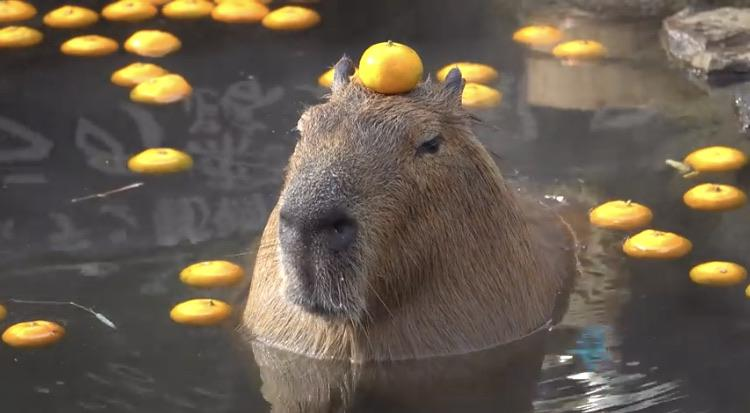
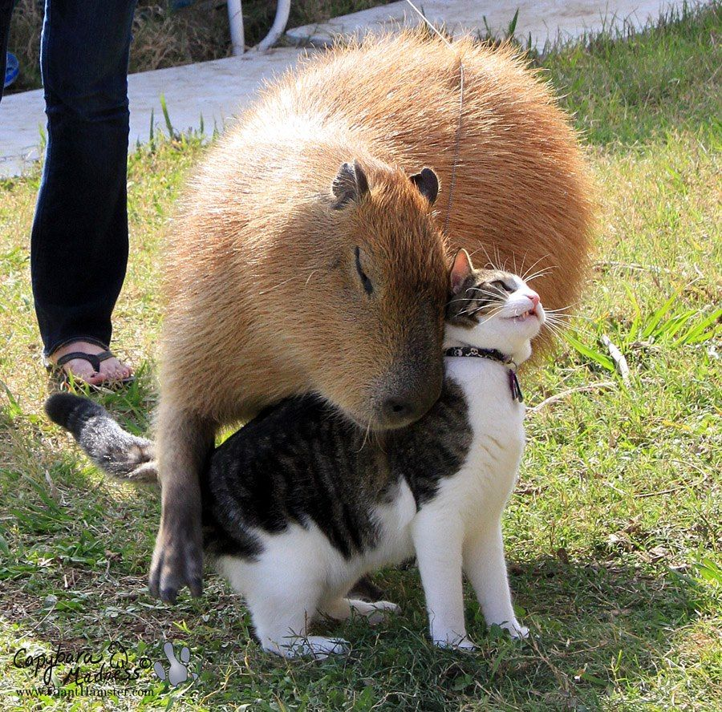

El capibara, carpincho, chigüiro o conocido erróneamente como chigüire (Hydrochoerus hydrochaeris) es una especie de roedor de la familia de los cávidos, nativa de Sudamérica.
Le gusta usar cosas en la cabeza. Evidencia:
Ademas, es muy amigable con otros animales.
Ademas, es muy amigable con otros animales.
